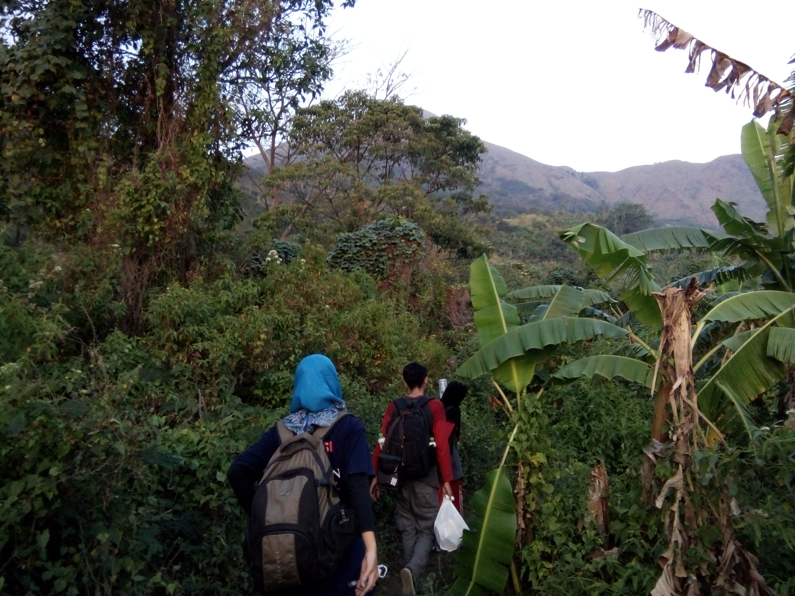
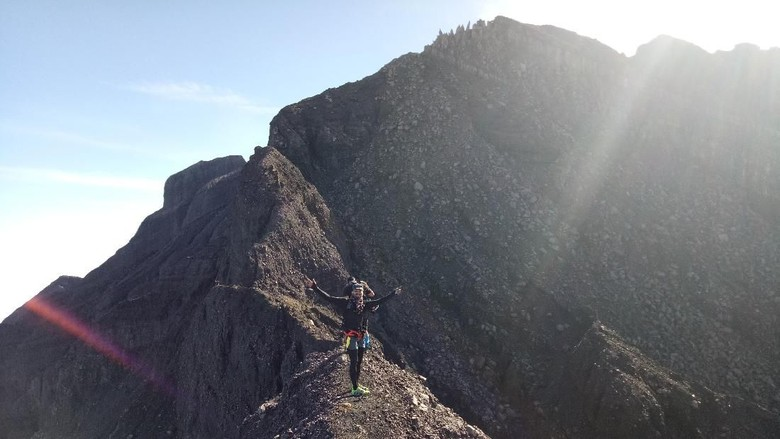
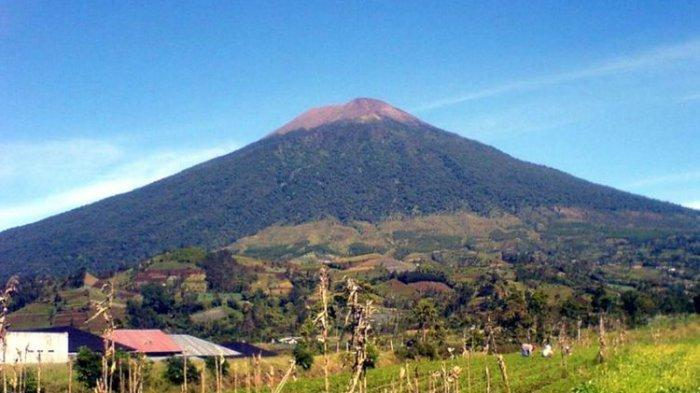

Perjalanan kali ini membawa saya ke salah satu gunung di Jawa Timur.
Gunung Butak merupakan gunung yang dikelilingi oleh beberapa kabupaten seperti Batu, Malang, dan Blitar.
Saya dan ke-4 teman saya kali ini ingin mencoba tantangan baru dengan melewati jalur Sirah Kencong.
Sirah Kencong merupakan daerah perkebunan teh yang dikelola oleh PTPN
Gunung Penanggungan via Jolotundo

Pertama kalinya Solo Hiking ke Gunung Penanggungan via Jolotundo. Gunung Penanggungan merupakan gunung yang tergolong cocok untuk pemula, jika kebanyakan orang lewat Tamiajeng kali ini saya mencoba untuk melewati Jalur Jolotundo.
Perjalanan via Jolotundo ini merupakan kedua kalinya sebelumnya saya sempat mendaki via jalur ini bersama ke 3 teman saya tetapi karena kerinduan akan Hiking membuat saya nekat untuk pergi sendiri.
Menuju Puncak Sejati Raung

Catatan pendakian ini saya buat ketika naik di tahun 2018. Perjalanan menuju Puncak Sejati di Gunung Raung memang tidak semudah yang dibayangkan dan tidak se-Lebay yang diceritakan orang-orang.
Carabiner, Jumar, Figure of Eight, dan Helm semua sudah disiapkan untuk menuju Puncak Sejati
Gunung Slamet via Blambangan

Pendakian di tahun 2018 bersama para lulusan Teknik Geofisika ITS angkatan 2014. Saya dan 6 orang kawan jurusan saya mendaki Gunung Slamet di tahun 2018 hanya saya dan 1 orang kawan yang masih belum lulus di kampus ITS.
Sembari menunggu tantangan selanjutnya setelah lulus, kawan-kawan saya mengajak untuk sejenak mencari hiburan dengan mendaki Gunung Slamet.
Tonton Video Terbaru
Menuju Puncak Sejati Gunung Raung
Caving Gua Luweng Jaran
Ikuti Kegiatan Terbaru di Blog Ini dengan Klik Sign Up